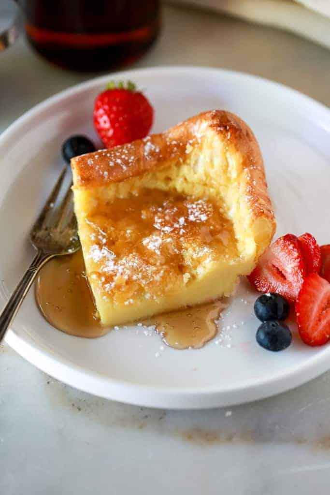

German Pancakes

Description
A light and fluffy concoction of only 6 ingredients. Made lightning fast and with a rich taste that you won't be able stop eating.
Ingredients
- 7 large eggs
- 1 cup whole milk
- 1 cup flour
- 1 tsp vanilla extract
- 1 tsp salt
- 3 Tbsp melted butter
Steps
- Preheat oven to 375 degrees.
- In a blender, add eggs, milk, flour, vanilla, and salt.
- Blend until well combined, stopping to scrape flour off sides.
- Blend a little more and set aside.
- Melt butter in microwave, and pour into a 9x13 glass pan.
- Coat all sides and bottom with butter.
- Leaving butter in the dish, pour egg mixture into pan.
- Bake 30 minutes.
- Serve hot and add any preferred pancake toppings.